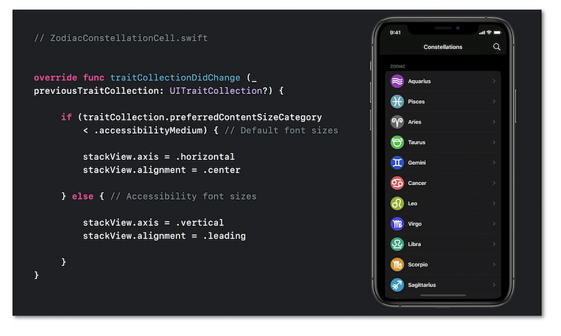
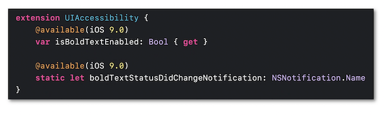

WWDC 2020: Make Your App Visually Accessible
This video available on the official Apple website (session 10020) talks about some of the great ways that your app can provide for a visual experience that is inclusive to everyone.

Various contents and their video timelapse are indicated hereunder:
- Introduction (00:40)
- Color & shapes
- ⟹ new in iOS 14
- Text readibility
- Display preferences
- ⟹ new in iOS 14
Color & shapes #
🎬 (01:13)
Using colors is the first idea that comes up to provide visual information.
Unfortunately, that won't be efficient at all for people suffering from dyschromatopsia for instance.
It's then crucial to use simultaneously the notions of color contrast and shapes in order to ensure a complete visual accessibility.
🎬 (02:15)
Since iOS 7, graphical elements like buttons can stand out thanks to the user setting Button Shapes whose state is now available in iOS 14 through notifications.
The Differentiate Without Color accessibility option introduced in iOS 13 has also a state whose changing can be known through notification as well.
If need be, further information about accessibility option events are available in the developers guide section.
🎬 (03:26)
The SF Symbols introduced in iOS 13 automatically adapt to the Dynamic Type feature and the Bold Text user setting as well so as to alleviate the necessary graphical work for accessibility.
These elements are discussed in depth in the footage of the sheet inside the Text Readibility section.
🎬 (05:18)
The color contrast is a key step in developing an accessible graphical interface.
The Increase Contrast user setting is a good way to significantly increase the contrast intensity.
Xcode is the perfect place to define this option...
... while quickly checking out the different constrasts thanks to its Accessibility Inspector tool.
Even if the Dark Mode iOS 13 feature is an essential element to be integrated, some users might choose the Smart Invert user setting to strongly darken the colors and increase their contrasts (🎬 07:47).
The graphical elements that aren't concerned by this option must inform the system with the accessibilityIgnoresInvertColors property.

Text readibility #
🎬 (08:56)
The Dynamic Type feature not only ensures a more condensed content by decreasing the text size but is also able to enlarge this same text size for people who are no longer emmetropic.
It's then crucial to set up the application interface with the most important text size in mind while avoiding words truncations.
🎬 (09:51)
The text size modification thanks to the user settings fires the traitCollectionDidChange method that enables a more subtle layout of the graphical elements according to the chosen size value.

🎬 (10:57)
The Bold Text accessibility option is fully efficient with the text styles using.
However, it's still possible to change the value of this property on the appropriate elements thanks to the dedicated notification.

Display preferences #
🎬 (11:58)
All the options that may be used by the user to modify the application appearance must be taken into account in the design process.

The set of the accessibility options available in the user settings are fully described in the design part.
🎬 (12:38)
This part deals with two user preferences about avoiding balance problems or nausea related to movement that might affect some people.
The first one is the Reduce Motion option whose intensity may be controlled in code writing.

The second one introduced in iOS 13 defines a less disturbing transition between screens for those with a motion visual thickness (🎬 13:31).
Developers can now access its state an be aware of its value modification since iOSÂ 14.
🎬 (14:19)
The latest introduced preference is connected with transparency that makes reading easier because blurring is often accompanied by a variation in contrasts that can significantly disrupt word recognition.
It's also possible to modify the transparency property of an element and be notified of its modification in code writing.